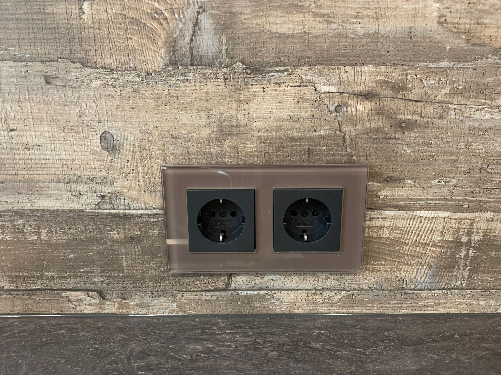

AW FAQ
Ihre Fragen. Unsere Antworten.
Häufig gestellte Fragen — zögern Sie nicht, uns für weitere Informationen zu kontaktieren.
AW Allgemeine Fragen
Häufig gestellte Fragen.
01Müssen die Kabelkanäle in den Transformatorenkasten verlegt werden?
Nein. Die Leitung sollte kurz vor dem Kasten gestoppt werden.
02Wie nah am Mast muss ich meine Leitung verlegen?
Die Oberseite des Bogens muss 6″ vom Mast entfernt sein.
03Sind zusätzliche Leitungen erforderlich, die über die im Graben installierten hinausgehen?
Wenn der Anschluss von einem Strommast aus erfolgt, muss das Mitglied 1-10 Abschnitte SCH 80 PVC und 2-10 Abschnitte SCH 40 PVC liefern, die in der Nähe des Mastfußes verbleiben, damit das Energieversorgungsunternehmen sie am Mast installieren kann.
04Muss jemand den Graben inspizieren, bevor die Leitung abgedeckt wird?
Ja, wenden Sie sich an das Elektrizitätswerk, und ein Vertreter wird kommen und den Graben und die Leitung überprüfen. Der Vertreter wird einen weißen Aufkleber auf der Zählertafel anbringen, auf dem steht, ob die Prüfung bestanden wurde oder nicht.
05Gibt es einen Unterschied bei den Zählerständen?
Ja, es gibt drei Arten. Nur Freileitung, nur Erdverlegung und Freileitung/Erdverlegung in Kombination. Kombinationsdosen werden jedoch nicht für unterirdische Installationen empfohlen, da der Platz für die Kabel begrenzt ist.
06Können Abwasserleitungen unter Stromleitungen verlegt werden?
Ja.
07Kann ein fester Anschluss installiert werden, wenn das Haus bei der Inspektion beschädigt wurde?
Nein, wir stellen keinen Zähler ein, ohne dass eine abschließende Inspektion oder in einigen Fällen eine Nichtnutzungsgenehmigung durch den örtlichen Elektroinspektor vorliegt.
08Wie sieht es mit der Außenbeleuchtung aus?
Wir bieten eine Vielzahl von Beleuchtungsprodukten an, darunter dekorative Kolonialleuchten, Cobra-Heads, Richtstrahler und Sicherheitsleuchten. Wir können Pläne für jeden Beleuchtungsbedarf maßschneidern.
AW Kontakt
Bringen wir Ihr
Projekt ans Netz.
anfordern
Mo – Fr 08:00 – 17:00 Uhr · Telefonisch am besten donnerstags & freitags von 10:00 bis 15:00 Uhr.